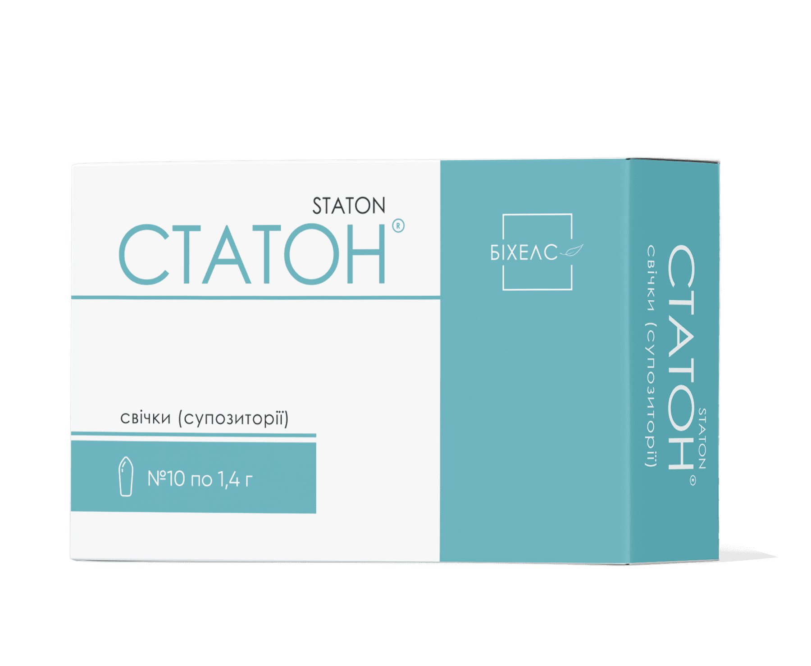

Статон
Шугард–6 стражів. Гармонія в поєднанні, захищають на 6 етапах порушень вуглеводного обміну.

Статон (супозиторії №30)
Спеціалізовані ректальні супозиторії для підтримки здоров'я передміхурової залози
Ефективний урологічний засіб у формі супозиторіїв на основі стандартизованих екстрактів та активних компонентів. Забезпечує пряму доставку діючих речовин до тканин простати, ефективно усуває запальні процеси, знімає набряк, нормалізує сечовипускання та покращує мікроциркуляцію.

Склад та активні речовини
1 супозиторій містить:
- Екстракт плодів карликової пальми (Са Пальметто / Serenoa repens);
- Екстракт насіння гарбуза;
- Екстракт кори африканської сливи (Pygeum africanum);
- Лікопін;
- Цинку гліцинат (хелатний цинк);
- Допоміжні речовини: твердий жир (основа для супозиторіїв).
Властивості компонентів
- Екстракт Са Пальметто та Африканської сливи: виявляють виражену місцеву протизапальну та антиандрогенну дію, інгібують 5-альфа-редуктазу, зменшують набряк і гіперплазію простати.
- Екстракт насіння гарбуза та Лікопін: покращують мікроциркуляцію в органах малого таза, володіють потужними антиоксидантними властивостями та захищають тканини залози.
- Ректальна форма введення: забезпечує швидке всмоктування активних компонентів безпосередньо через гемороїдальні судини в органи малого таза, оминаючи шлунково-кишковий тракт і печінку, що підвищує біодоступність та ефективність.
Рекомендації до застосування
- Хронічний простатит у стадії загострення або ремісії;
- Доброякісна гіперплазія передміхурової залози (аденома простати I-II стадії);
- Порушення сечовипускання, дизуричні розлади, відчуття неповного випорожнення сечового міхура;
- Профілактика вікових застійних та запальних процесів у передміхуровій залозі.
Спосіб застосування та дози
Застосовувати ректально по 1 супозиторію 1–2 рази на добу (бажано після очищення кишківника або на ніч). Рекомендований курс застосування — від 1 до 2 місяців (за призначенням лікаря курс може бути повторений).
Протипоказання
Підвищена індивідуальна чутливість до компонентів препарату, гострі кровотечі з прямої кишки, дитячий вік.